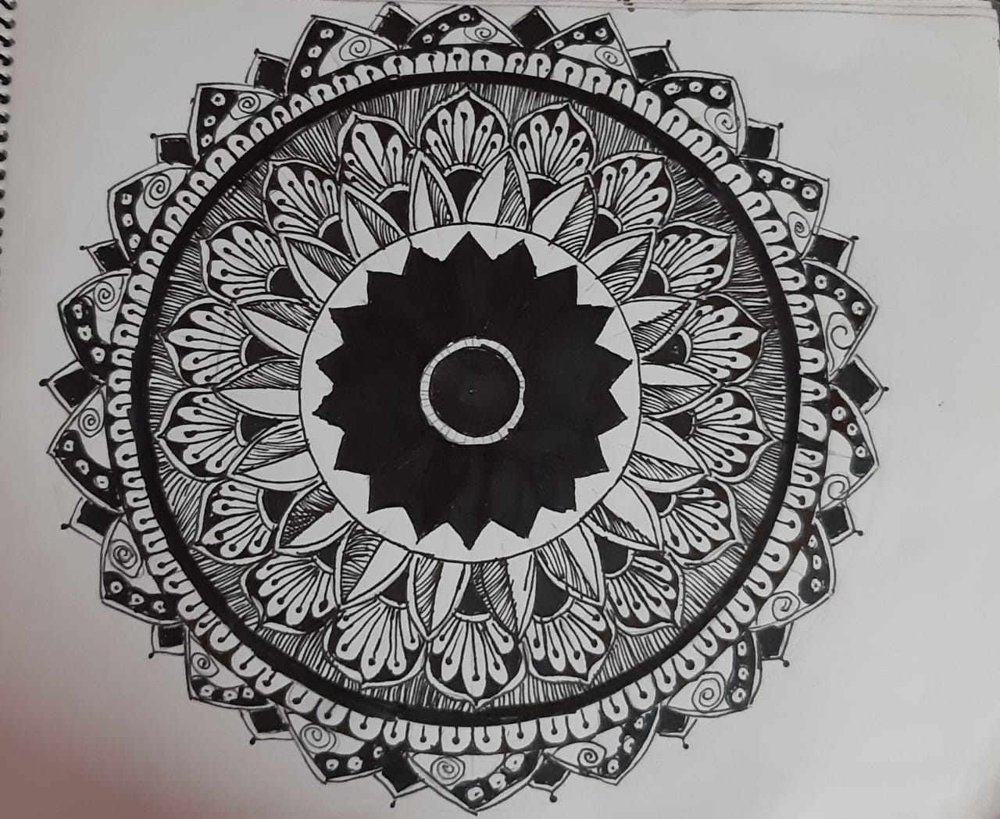
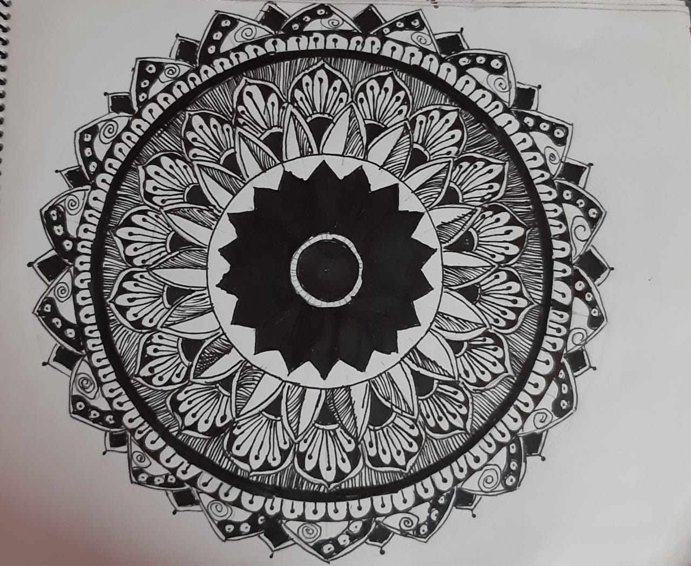

My hobby is drawing. I love to do drawings. I am interested in Mandala, Madhubani, Gond and One point perspective(3-D) drawings. I am doing drawings from 1st standard and now also doing (6th Standard). When I was in 1st standard I used to draw simple drawings. I learnt Madhubani an Gond from 3rd Standard till 5th standard. And now in 6th standard I learnt to draw beautiful drawings like mandala. The above shown image is also my Drawing. I have mostly painted my drawings except of One point perspective.
Here Are some of my drawings
 
